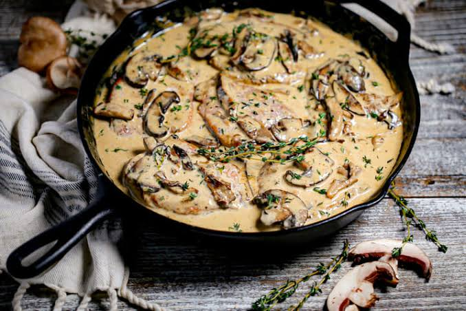

Back to Main Page
Pork Chops in Garlic Mushroom Sauce

Description
Pork Chops in Garlic Mushroom Sauce is an elegant, restaurant-quality dish that comes together quickly in a single skillet.
It features thick, juicy pork chops pan-seared to golden-brown perfection, then smothered in a luxurious, velvety cream sauce loaded with earthy sliced mushrooms and plenty of aromatic garlic.
The savory drippings from the seared meat form the flavorful base of the sauce, ensuring every element is deeply savory.
This recipe effortlessly balances rich, decadent flavors with weekday convenience, making it ideal for both busy nights and special dinners.
The combination of garlic, herbs, and cream creates a comforting sauce that pairs exceptionally well with the tender pork.
Serve it hot over a bed of garlic mashed potatoes, roasted vegetables, or buttered pasta to soak up every last drop of the gourmet mushroom reduction.
Ingredients
- Pork chops: 4 thick-cut (bone-in or boneless)
- Mushrooms: 8 ounces, sliced (cremini or white button)
- Garlic: 4 cloves, minced
- Olive oil: 1 tablespoon
- Butter: 2 tablespoons (divided)
- Chicken broth: 1/2 cup
- Heavy cream: 1/2 cup
- Italian seasoning: 1 teaspoon
- Garlic powder: 1/2 teaspoon (for seasoning the pork)
- Onion powder: 1/2 teaspoon (for seasoning the pork)
- Salt and black pepper: To taste
- Fresh parsley: 2 tablespoons, chopped (for garnish)
Steps
- Season the pork chops: Pat the pork chops dry with a paper towel and season both sides generously with garlic powder, onion powder, salt, and black pepper.
- Sear the meat: Heat the olive oil and one tablespoon of butter in a large skillet over medium-high heat, then sear the pork chops for 4 to 5 minutes per side until golden brown before transferring them to a plate.
- Cook the mushrooms: Melt the remaining tablespoon of butter in the same skillet, add the sliced mushrooms, and cook for 5 to 6 minutes until they release their moisture and turn a deep golden brown.
- Sauté the garlic: Stir the minced garlic into the mushrooms and cook for about 1 minute until highly fragrant, taking care not to let it burn.
- Deglaze the pan: Pour in the chicken broth, using a wooden spoon to scrape up all the flavorful browned bits stuck to the bottom of the skillet, and let it simmer for 2 minutes to reduce slightly.
- Build the cream sauce: Turn the heat down to low, pour in the heavy cream and Italian seasoning, and stir continuously until the mixture is fully combined and begins to simmer gently.
- Return pork to skillet: Nestled the seared pork chops and any accumulated juices back into the skillet, spooning the rich cream sauce right over the top of the meat.
- Simmer to finish: Let everything simmer gently for 3 to 5 minutes until the sauce thickens slightly and the pork chops reach an internal temperature of 145°F (63°C).
- Garnish and rest: Remove the skillet from the heat, sprinkle with fresh chopped parsley, and let the dish rest for a couple of minutes before serving hot.